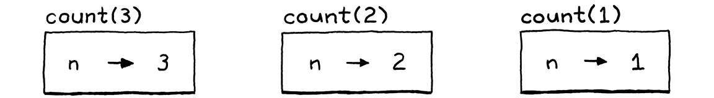
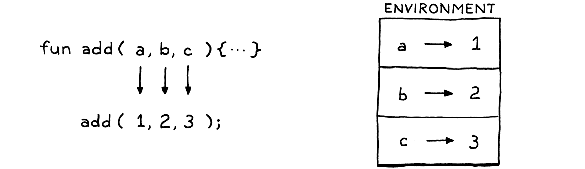
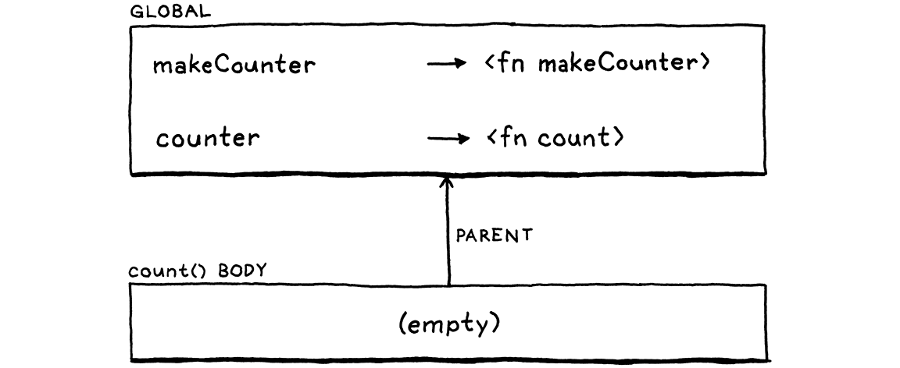
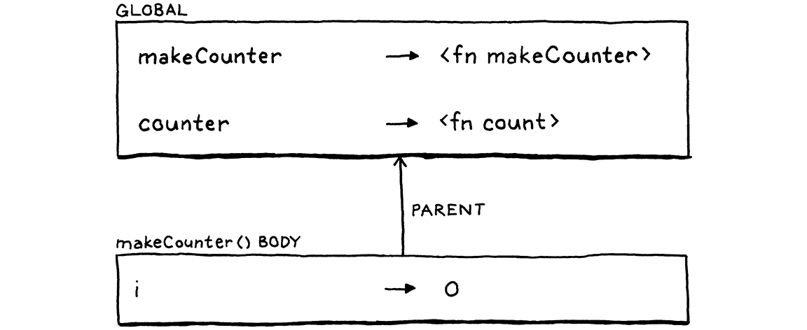
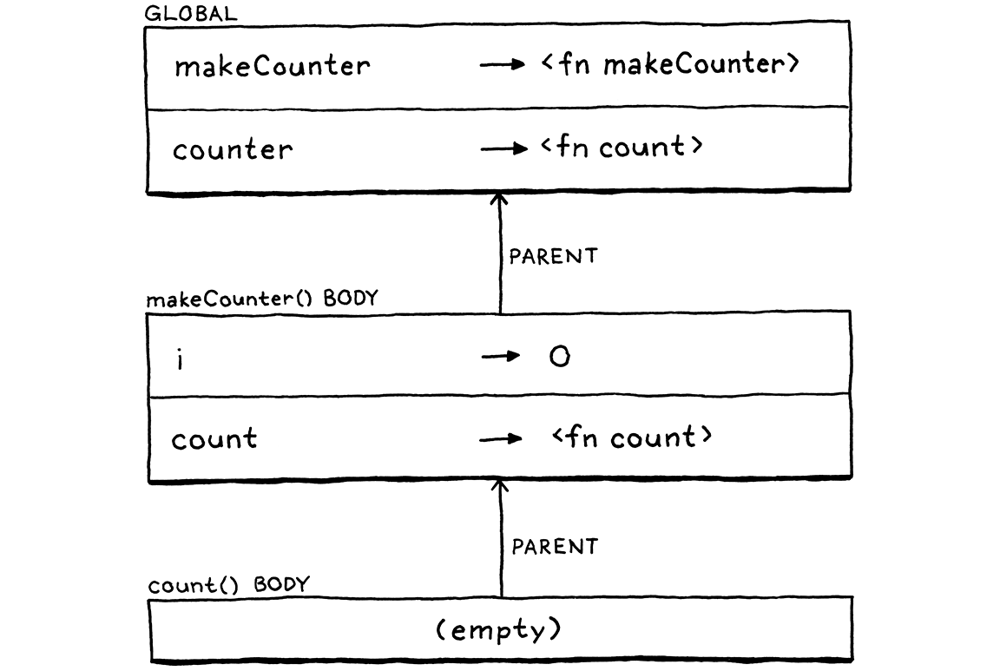

函数
人类心智的运作方式也是这样——把旧观念复合起来，变成新的结构，这些结构又变成新的 观念，本身又能被复合，一圈又一圈永不停息，离每门语言赖以立足的、那些最基本最贴地的 意象越来越远。
道格拉斯·R·霍夫施塔特（Douglas R. Hofstadter），《我是一个奇异的环》
本章标志着大量艰苦工作的收官。前几章各自都添上了有用的功能，但每一章也都提供了 拼图的一块碎片。我们会把这些碎片——表达式、语句、变量、控制流和 词法作用域——再补上几块，把它们全部组装起来，支撑起真正的用户定义函数和函数调用。
10 . 1函数调用
C 风格的函数调用语法你肯定很熟悉，但它的文法比你可能意识到的更微妙。调用通常是指向具名 函数的，比如：
average(1, 2);
但被调用函数的名字其实并不是调用语法的一部分。被调用的那个 东西——也就是被调用者（callee）——可以是任何求值结果为函数的表达式。（好吧，它确实 得是个优先级相当高的表达式，不过用括号就能解决。）例如：
getCallback()();
这里有两个调用表达式。第一对括号的被调用者是 getCallback。但第二次调用把整个
getCallback() 表达式当成了它的被调用者。真正表示函数调用的是跟在表达式后面的那对
括号。你可以把一次调用大致看成一个以 ( 开头的后缀运算符。
这个「运算符」的优先级比任何其他运算符都高，连一元运算符都比不上。于是我们让 unary
规则向上冒泡到一个新的 call 规则，把它安放进文法里。
unary → ( "!" | "-" ) unary | call ; call → primary ( "(" arguments? ")" )* ;
这条规则匹配一个基本表达式，后面跟零个或多个函数调用。如果没有括号，它解析出来的就是 一个光秃秃的基本表达式。否则，每一次调用都由一对括号识别，里面跟一个可选的实参列表。 实参列表的文法是：
arguments → expression ( "," expression )* ;
这条规则要求至少有一个实参表达式，后面跟零个或多个其他表达式，每个前面都带一个逗号。
为了处理零实参的调用，call 规则本身把整个 arguments 产生式当成可选的。
我承认，对于那个常见得不能再常见的「零个或多个用逗号隔开的东西」模式，这文法看起来比 你预期的更别扭。有些更精巧的元语法能处理得更好，但在我们这套 BNF 以及我见过的许多语言 规范里，它就是这么笨重。
在我们的语法树生成器里，我们加上一个新节点。
"Binary : Expr left, Token operator, Expr right",
在 main() 内
"Call : Expr callee, Token paren, List<Expr> arguments",
"Grouping : Expr expression",
它存下被调用者表达式，以及一列实参表达式。它还存下右括号那个词法单元。当函数调用引发运行时 错误时，我们会用到那个词法单元的位置。
打开解析器。以前 unary() 直接跳到 primary()，现在把它改成调用——呃——call()。
return new Expr.Unary(operator, right);
}
在 unary() 内
替换 1 行
return call();
}
它的定义是：
加在 unary() 之后
private Expr call() { Expr expr = primary(); while (true) { if (match(LEFT_PAREN)) { expr = finishCall(expr); } else { break; } } return expr; }
这里的代码和文法规则并没有完全对上。我挪动了几样东西，让代码更干净些——这算是手写解析器
才享有的奢侈之一。不过它和我们解析中缀运算符的方式大致相同。首先，我们解析一个基本表达式，
它是这次调用的「左操作数」。然后，每当我们看到一个 (，就调用 finishCall()，用先前解析
出来的表达式作为被调用者来解析调用表达式。返回的表达式成为新的 expr，然后我们循环下去，
看结果本身是否又被调用。
解析实参列表的代码在这个辅助函数里：
加在 unary() 之后
private Expr finishCall(Expr callee) { List<Expr> arguments = new ArrayList<>(); if (!check(RIGHT_PAREN)) { do { arguments.add(expression()); } while (match(COMMA)); } Token paren = consume(RIGHT_PAREN, "Expect ')' after arguments."); return new Expr.Call(callee, paren, arguments); }
这基本上就是把 arguments 文法规则翻译成代码，只不过我们还处理了零实参的情况。我们先通过
看下一个词法单元是不是 ) 来检查这种情况。如果是，我们就不去解析任何实参。
否则，我们解析一个表达式，然后找逗号，表明那个表达式之后还有一个实参。只要每个表达式 之后都能找到逗号，我们就一直这么做。当找不到逗号时，实参列表就一定结束了，我们吃掉那个 预期的右括号。最后，我们把被调用者和那些实参包成一个调用 AST 节点。
10 . 1 . 1最大实参数
目前我们解析实参的那个循环没有任何上界。如果你想调用一个函数并传给它一百万个实参，解析器 也不会有任何问题。我们要限制一下吗？
别的语言各有各的做法。C 标准说，一个符合规范的实现必须支持函数调用至少 127 个实参， 但没说有任何上限。Java 规范说一个方法可以接收不超过 255 个 实参。
我们的 Lox Java 解释器其实不太需要这个上限，但给实参个数设一个上限会简化第三部分的 字节码解释器。我们希望两个解释器在诸如这种古怪的边角情况下也互相兼容，所以也给 jlox 加上 同样的限制。
do {
在 finishCall() 内
if (arguments.size() >= 255) { error(peek(), "Can't have more than 255 arguments."); }
arguments.add(expression());
注意这里的代码在遇到实参太多时报告一个错误，但它并不抛出这个错误。抛出是让我们进入 恐慌模式的方式——如果解析器处于混乱状态、已经不知道自己在文法里的哪个位置了，那正是我们 想要的。但这里解析器仍处于完全合法的状态——它只是找到了太多实参。所以它报告错误，然后 继续往前干。
10 . 1 . 2解释函数调用
我们还没有任何可以调用的函数，所以先实现调用看起来有点怪，不过这个问题留到后面再说。 首先，我们的解释器需要一个新的 import。
import java.util.ArrayList;
import java.util.List;
和往常一样，解释从一个新的 visit 方法开始，处理我们这个新的调用表达式节点。
加在 visitBinaryExpr() 之后
@Override public Object visitCallExpr(Expr.Call expr) { Object callee = evaluate(expr.callee); List<Object> arguments = new ArrayList<>(); for (Expr argument : expr.arguments) { arguments.add(evaluate(argument)); } LoxCallable function = (LoxCallable)callee; return function.call(this, arguments); }
首先，我们对被调用者的表达式求值。通常这个表达式只是一个标识符，按名字查找那个函数， 但它也可能是别的东西。然后我们按顺序对每个实参表达式求值，把得到的值存进一个列表。
一旦被调用者和实参都准备好了，剩下的就只是执行这次调用。我们把被调用者转型成一个 LoxCallable，然后在它上面调用 call() 方法。任何能被像函数一样
调用的 Lox 对象，其 Java 表示都会实现这个接口。这自然包括用户定义的函数，也包括类对象，
因为类是被「调用」来构造新实例的。我们不久之后还会为另一个用途使用它。
这个新接口没多少东西。
新建文件
package com.craftinginterpreters.lox; import java.util.List; interface LoxCallable { Object call(Interpreter interpreter, List<Object> arguments); }
我们把解释器传进去，以防实现 call() 的那个类需要它。我们也把求值后的实参值列表给它。
接下来实现者的任务，就是返回这次调用表达式产生的值。
10 . 1 . 3调用类型错误
在动手实现 LoxCallable 之前，我们需要让那个 visit 方法更健壮一点。它目前对几种失败模式 视而不见，而我们不能假装那些不会发生。首先，如果被调用者其实不是个能调用的东西，会怎样？ 比如你试着写这样：
"totally not a function"();
在 Lox 里字符串是不可调用的。Lox 字符串的运行时表示是一个 Java 字符串，所以当我们把它 转型成 LoxCallable 时，JVM 会抛出一个 ClassCastException。我们不想让解释器吐出一大段 难看的 Java 堆栈跟踪然后死掉。所以我们需要自己先检查类型。
}
在 visitCallExpr() 内
if (!(callee instanceof LoxCallable)) { throw new RuntimeError(expr.paren, "Can only call functions and classes."); }
LoxCallable function = (LoxCallable)callee;
我们仍然抛异常，但现在是抛我们自己的异常类型，一个解释器知道该捕获并优雅报告的类型。
10 . 1 . 4检查元数
另一个问题关系到函数的元数。元数是「一个函数或操作期望多少个实参」这件事的高级说法。 一元运算符元数为一，二元运算符为二，等等。对函数来说，元数由它声明的形参个数决定。
fun add(a, b, c) { print a + b + c; }
这个函数定义了三个形参 a、b 和 c，所以它的元数是三，期望三个实参。那么如果你这样
调用它会怎样：
add(1, 2, 3, 4); // 太多了。 add(1, 2); // 太少了。
不同语言对这个问题的做法不同。当然，大多数静态类型语言在编译期就检查，参数个数和函数
元数不匹配就拒绝编译。JavaScript 会丢弃你多传的任何实参。如果你传得不够，它就用那个
有点像 null 但又不完全是 null 的魔法值 undefined 填上缺失的形参。Python 更严格。实参
列表太短或太长，它都抛运行时错误。
我觉得后者是更好的做法。传错实参个数几乎总是个 bug，而且我自己就真犯过这个错。既然 如此，实现越早把我的注意力吸引到它越好。所以对 Lox，我们采用 Python 的做法。在调用 被调用者之前，我们检查实参列表的长度是否与被调用者的元数相符。
LoxCallable function = (LoxCallable)callee;
在 visitCallExpr() 内
if (arguments.size() != function.arity()) { throw new RuntimeError(expr.paren, "Expected " + function.arity() + " arguments but got " + arguments.size() + "."); }
return function.call(this, arguments);
这需要在 LoxCallable 接口上加一个新方法，让它报出自己的元数。
interface LoxCallable {
在接口 LoxCallable 内
int arity();
Object call(Interpreter interpreter, List<Object> arguments);
我们完全可以把元数检查塞进 call() 的具体实现里。但既然以后会有多个类实现 LoxCallable，
那样就会把重复的校验散落在几个类中。把它上提到 visit 方法里，我们就能在一处搞定。
10 . 2原生函数
理论上我们能调用函数了，可我们还没有函数可调。在讲用户定义的函数之前，正好可以介绍语言 实现中一个至关重要、却常被忽略的方面——原生函数。 这些函数由解释器暴露给用户代码，但它们是用宿主语言（我们的情况是 Java）实现的，而不是用 被实现的语言（Lox）实现的。
有时这些函数也换个称呼：primitive、external function，或者 foreign function。 由于这些函数可以在用户程序运行期间被调用，它们构成了实现的运行时的一部分。很多编程语言 书里对此一带而过，因为这类内容在概念上没什么意思。原生函数大多是些苦力活。
但说到让你的语言真的擅长做有用的事，你的实现所提供的原生函数是关键。它们提供了通往那些 基础服务的通道，而所有程序都是用这些服务定义的。如果你不提供访问文件系统的原生函数， 用户要写出一个读取并显示文件的程序可有得苦了。
很多语言还允许用户提供自己的原生函数。实现这件事的机制叫作外部函数接口（FFI）、 原生扩展、原生接口，或者诸如此类的名字。它们的好处是，让语言实现者不必为底层平台 支持的每一样能力都提供访问接口。我们不会给 jlox 定义 FFI，但会加一个原生函数，让你看看 它长什么样。
10 . 2 . 1报告时间
等我们到第三部分、开始动手做一个效率高得多的 Lox 实现时，我们会深深关心性能。性能 工作需要测量，而测量又意味着基准测试。基准测试是那些测量「跑一遍解释器的某个角落要 花多少时间」的程序。
我们可以测量「启动解释器、跑基准测试、退出」这一整段时间，但那会加进一大堆开销——JVM 启动时间、操作系统的把戏等等。当然，那些开销确实也有影响，但如果你只是想验证对解释器某个 部分的某项优化，你不会希望那些开销遮住你的结果。
一个更好的办法，是让基准测试脚本自己去测量代码里两个点之间经过的时间。要做到这一点，一个 Lox 程序得能够报时间。现在没法做到——没有对计算机底层时钟的访问，你不可能「从零开始」 实现一个有用的时钟。
所以我们要加上 clock()，一个返回「从某个固定时间点起过了多少秒」的原生函数。连续两次调用
的结果之差，就告诉你两次调用之间过了多久。这个函数定义在全局作用域里，所以我们要确保
解释器能访问它。
class Interpreter implements Expr.Visitor<Object>,
Stmt.Visitor<Void> {
在类 Interpreter 内
替换 1 行
final Environment globals = new Environment(); private Environment environment = globals;
void interpret(List<Stmt> statements) {
解释器里的 environment 字段会随着我们进入和退出局部作用域而变化。它跟踪的是当前环境。
新加的这个 globals 字段持有对最外层全局环境的一份固定引用。
当我们实例化一个 Interpreter 时，我们把这个原生函数塞进那个全局作用域里。
private Environment environment = globals;
在类 Interpreter 内
Interpreter() { globals.define("clock", new LoxCallable() { @Override public int arity() { return 0; } @Override public Object call(Interpreter interpreter, List<Object> arguments) { return (double)System.currentTimeMillis() / 1000.0; } @Override public String toString() { return "<native fn>"; } }); }
void interpret(List<Stmt> statements) {
这定义了一个名为 “clock” 的变量。它的值是一个实现了 LoxCallable
的 Java 匿名类。clock() 函数不接收实参，所以元数是零。call() 的实现调用对应的 Java
函数，并把结果转换成以秒为单位的 double 值。
如果我们想再加别的原生函数——读用户输入、处理文件等等——可以把它们各自做成一个实现 LoxCallable 的匿名类。但对这本书来说，有这一个真的就够了。
我们先别自己定义函数了，让我们的用户接手吧……
10 . 3函数声明
我们终于可以在当初引入变量的那个 declaration 规则里加一条新的产生式了。函数声明和变量
一样，会绑定一个新的名字。这意味着它只能出现在允许声明的地方。
declaration → funDecl | varDecl | statement ;
更新后的 declaration 规则引用了这条新规则：
funDecl → "fun" function ; function → IDENTIFIER "(" parameters? ")" block ;
主规则 funDecl 用到了一条独立的辅助规则 function。一条函数声明语句就是 fun 关键字
加上真正像函数的那一堆东西。等我们讲到类，会复用那条 function 规则来声明方法。方法看起来
和函数声明相似，但前面没有 fun。
函数本身是一个名字，加上括起来的形式参列表，再加上函数体。函数体总是一个花括号块，用的 是块语句所用的同一条文法规则。形式参列表用这条规则：
parameters → IDENTIFIER ( "," IDENTIFIER )* ;
它和前面那条 arguments 规则很像，只是每个形参都是一个标识符，而不是表达式。解析器要嚼
的新语法不少，但生成的 AST 节点还不算太糟。
"Expression : Expr expression",
在 main() 内
"Function : Token name, List<Token> params," + " List<Stmt> body",
"If : Expr condition, Stmt thenBranch," +
一个函数节点有一个名字、一列形参（它们的名字），然后是函数体。我们把函数体存成花括号里 包含的那些语句的列表。
在解析器那边，我们把新的声明织进去。
try {
在 declaration() 内
if (match(FUN)) return function("function");
if (match(VAR)) return varDeclaration();
和其他语句一样，函数是靠开头那个关键字识别的。遇到 fun 时，我们调用 function。这对应
文法里的 function 规则，因为我们已经匹配并吃掉了 fun 关键字。我们一块一块地把这个方法
搭起来，先从这段开始：
加在 expressionStatement() 之后
private Stmt.Function function(String kind) { Token name = consume(IDENTIFIER, "Expect " + kind + " name."); }
目前它只吃掉函数名那个标识符词法单元。你可能对那个有点古怪的 kind 参数感到疑惑。就像我们
复用文法规则一样，以后我们也会复用 function() 方法来解析类里的方法。到那时，我们会给
kind 传入 “method”，好让错误信息针对正在解析的那种声明。
接下来，我们解析形式参列表和包在外面的那对圆括号。
Token name = consume(IDENTIFIER, "Expect " + kind + " name.");
在 function() 内
consume(LEFT_PAREN, "Expect '(' after " + kind + " name."); List<Token> parameters = new ArrayList<>(); if (!check(RIGHT_PAREN)) { do { if (parameters.size() >= 255) { error(peek(), "Can't have more than 255 parameters."); } parameters.add( consume(IDENTIFIER, "Expect parameter name.")); } while (match(COMMA)); } consume(RIGHT_PAREN, "Expect ')' after parameters.");
}
这和处理调用实参的代码很像，只不过没有拆成辅助方法。外层 if 语句处理零形参的情况，内层
while 循环则只要能找到分隔用的逗号就一直解析形参。结果是每个形参名字对应的词法单元列表。
就像我们对函数调用的实参所做的那样，我们在解析期就校验：形参个数不能超过函数所允许的 最大值。
最后，我们解析函数体，把这一切包进一个函数节点。
consume(RIGHT_PAREN, "Expect ')' after parameters.");
在 function() 内
consume(LEFT_BRACE, "Expect '{' before " + kind + " body.");
List<Stmt> body = block();
return new Stmt.Function(name, parameters, body);
}
注意我们在这里先吃掉了函数体开头那个 {，然后才调用 block()。因为 block() 假设括号词法单元
已经被匹配掉了。在这里吃掉它，能让我们在找不到 { 时报出更精确的错误信息，因为那时我们知道
它处在函数声明的语境里。
10 . 4函数对象
我们已经解析出了一些语法，通常这就准备好解释了，但首先我们得想清楚怎么在 Java 里表示一个 Lox 函数。我们得记住形参，好在函数被调用时把它们绑定到实参值上。当然，我们还得保留函数体 的代码，好在执行它。
那基本就是 Stmt.Function 类。能不能直接用它？差不多，但不能完全。我们还需要一个实现 LoxCallable 的类，才能调用它。我们不希望解释器的运行时阶段渗进前端的语法类里，所以不想让 Stmt.Function 自己去实现它。于是我们把它包进一个新类。
新建文件
package com.craftinginterpreters.lox; import java.util.List; class LoxFunction implements LoxCallable { private final Stmt.Function declaration; LoxFunction(Stmt.Function declaration) { this.declaration = declaration; } }
我们这样实现 LoxCallable 的 call()：
加在 LoxFunction() 之后
@Override public Object call(Interpreter interpreter, List<Object> arguments) { Environment environment = new Environment(interpreter.globals); for (int i = 0; i < declaration.params.size(); i++) { environment.define(declaration.params.get(i).lexeme, arguments.get(i)); } interpreter.executeBlock(declaration.body, environment); return null; }
这寥寥几行代码，是我们解释器里最基本、最有力量的部分之一。正如我们在讲语句和状态的那一章里看到的，管理名字环境是语言实现的核心部分。 函数和它关系极深。
形参是函数的核心，尤其是函数会封装自己的形参这一点——函数之外的任何代码都看不见它们。 这意味着每个函数都有自己的环境，用来存放那些变量。
更进一步，这个环境必须是动态创建的。每次函数调用都有自己的环境。否则递归就坏了。 如果同时有多个对同一个函数的调用在进行，每一个都需要自己的环境，尽管它们全都是对同一个 函数的调用。
比如说，下面是一种拐弯抹角的数到三的办法：
fun count(n) { if (n > 1) count(n - 1); print n; } count(3);
想象我们在最内层那次嵌套调用正要打印 1 的那个点上把解释器暂停。外层那些要打印 2 和 3 的
调用还没打印它们的值，所以内存里的某个地方一定还存着一些环境，记录着「n 在一个上下文
里绑定到 3、在另一个上下文里绑定到 2、在最内层绑定到 1」这件事，像这样：

这就是为什么我们在每次调用时创建新环境，而不是在函数声明时。前面那个 call() 方法
就是这么做的。调用一开始，它创建一个新环境。然后它让形参列表和实参列表齐步前进。每一对上，
它创建一个以形参命名的新变量，并把它绑定到实参的值上。
所以，对于这样一个程序：
fun add(a, b, c) { print a + b + c; } add(1, 2, 3);
在调用 add() 的那个位置上，解释器创建了这样一个东西：

然后 call() 让解释器在这个新的函数局部环境里执行函数体。到此为止，当前环境一直是函数
被调用的那个环境。现在，我们从那里瞬移进为这个函数新建的形参空间里。
要把数据传进函数，所需要的就这么多。通过在执行函数体时使用不同的环境，对同一个函数的、 代码相同的调用可以产生不同的结果。
一旦函数体执行完毕，executeBlock() 丢弃那个函数局部环境，并恢复回调用点处之前生效的那个
环境。最后，call() 返回 null，于是给调用方返回了 nil。（我们稍后会加上返回值。）
从机械的角度看，代码相当简单。走几个列表。绑定几个新变量。调一个方法。但正是在这里，函数声明 那结晶般的代码，变成了一个活生生的调用。这是我整本书里最喜欢的片段之一。如果你 有兴致，尽管花点时间对着它冥想一下。
完事？好。注意我们绑定形参时，假定形参列表和实参列表长度相同。这是安全的，因为
visitCallExpr() 在调用 call() 之前检查了元数。它靠的就是函数报出自己的元数。
加在 LoxFunction() 之后
@Override public int arity() { return declaration.params.size(); }
我们的对象表示差不多就是这些。既然已经在这儿了，我们不妨顺手实现一下 toString()。
加在 LoxFunction() 之后
@Override public String toString() { return "<fn " + declaration.name.lexeme + ">"; }
这样如果用户决定打印一个函数值，输出会好看些。
fun add(a, b) { print a + b; } print add; // "<fn add>".
10 . 4 . 1解释函数声明
我们很快会回来改进 LoxFunction，但现在这样就够开始用了。现在我们可以访问一条函数声明。
加在 visitExpressionStmt() 之后
@Override public Void visitFunctionStmt(Stmt.Function stmt) { LoxFunction function = new LoxFunction(stmt); environment.define(stmt.name.lexeme, function); return null; }
这和我们解释其他字面量表达式的方式类似。我们取一个函数语法节点——函数的编译期表示—— 把它转换成它的运行时表示。在这里，是一个包装着语法节点的 LoxFunction。
函数声明和其他字面量节点的不同之处在于，声明也会把产生的对象绑定到一个新变量上。所以 在创建 LoxFunction 之后，我们在当前环境里创建一个新绑定，并把对它的引用存在那里。
有了这个，我们就可以完全在 Lox 内部定义并调用自己的函数了。试试看：
fun sayHi(first, last) { print "Hi, " + first + " " + last + "!"; } sayHi("Dear", "Reader");
我不知道你怎么想，但在我看来，这就是一门货真价实的编程语言。
10 . 5Return 语句
我们可以通过传形参把数据送进函数，却没办法把结果取出来。如果
Lox 是像 Ruby 或 Scheme 那样面向表达式的语言，函数体就会是一个表达式，它的值隐式地就是函数
的结果。但在 Lox 里，函数体是一列不产生值的语句，所以我们需要专门的语法来产出一个结果。
换句话说，就是 return 语句。我敢说你已经猜到文法了。
statement → exprStmt | forStmt | ifStmt | printStmt | returnStmt | whileStmt | block ; returnStmt → "return" expression? ";" ;
我们又多了——事实上是最后一条——挂在那个德高望重的 statement 规则下的产生式。一条
return 语句就是 return 关键字，后面跟一个可选的表达式，以分号收尾。
返回值是可选的，为的是支持从一个不返回有用值的函数里提前退出。在静态类型语言里，
「void」函数不返回值，非 void 的返回。由于 Lox 是动态类型的，不存在真正的 void 函数。
编译器没法阻止你从没有 return 语句的函数调用里取走返回值。
fun procedure() { print "don't return anything"; } var result = procedure(); print result; // ?
这意味着每个 Lox 函数都必须返回某样东西，哪怕它一条 return 语句都没有。为此我们用
nil，这也是 LoxFunction 的 call() 实现最后返回 null 的原因。同样地，如果你在 return
语句里省略了值，我们干脆把它当作等价于：
return nil;
在我们的 AST 生成器里，我们加上一个新节点。
"Print : Expr expression",
在 main() 内
"Return : Token keyword, Expr value",
"Var : Token name, Expr initializer",
它保留 return 关键字词法单元，这样我们就能用它的位置做错误报告，还保留被返回的值（如果有
的话）。我们像解析其他语句那样解析它，先通过识别开头的关键字。
if (match(PRINT)) return printStatement();
在 statement() 内
if (match(RETURN)) return returnStatement();
if (match(WHILE)) return whileStatement();
它分岔到：
加在 printStatement() 之后
private Stmt returnStatement() { Token keyword = previous(); Expr value = null; if (!check(SEMICOLON)) { value = expression(); } consume(SEMICOLON, "Expect ';' after return value."); return new Stmt.Return(keyword, value); }
在抓住先前吃掉的 return 关键字之后，我们去找一个值表达式。由于很多不同的词法单元都可能开始
一个表达式，判断返回值是否存在很难。所以我们反过来检查它是不是不存在。既然分号
不可能开始一个表达式，如果下一个词法单元就是分号，我们就知道一定没有值。
10 . 5 . 1从调用中返回
解释一条 return 语句很棘手。你可以从函数体内的任何地方返回，甚至从深深嵌在其他语句
里面的地方返回。return 执行时，解释器需要从它当前所处的任何上下文里一路跳出去，让那次
函数调用完成，像是某种被打了鸡血的控制流结构。
比如说，假设我们正在运行这个程序，正要执行那条 return 语句：
fun count(n) { while (n < 100) { if (n == 3) return n; // <-- print n; n = n + 1; } } count(1);
Java 调用栈目前大致长这样：
Interpreter.visitReturnStmt() Interpreter.visitIfStmt() Interpreter.executeBlock() Interpreter.visitBlockStmt() Interpreter.visitWhileStmt() Interpreter.executeBlock() LoxFunction.call() Interpreter.visitCallExpr()
我们需要从栈顶一路回到 call()。我不知道你怎么想，但对我来说这听起来就是异常。执行一条
return 语句时，我们用一个异常让解释器穿过所有外层语句的 visit 方法一路退回到开始执行
函数体的那段代码。
我们这个新 AST 节点的 visit 方法长这样：
加在 visitPrintStmt() 之后
@Override public Void visitReturnStmt(Stmt.Return stmt) { Object value = null; if (stmt.value != null) value = evaluate(stmt.value); throw new Return(value); }
如果有返回值，我们对它求值；否则我们就用 nil。然后我们把这个值包进一个自定义异常类里
抛出去。
新建文件
package com.craftinginterpreters.lox; class Return extends RuntimeException { final Object value; Return(Object value) { super(null, null, false, false); this.value = value; } }
这个类把返回值和 Java 要求一个运行时异常类所必须的全套装饰包在一起。那个带着 null 和
false 参数的奇怪 super 构造调用，关掉了我们不需要的某些 JVM 机制。既然我们把这个异常类
用于控制流而不是真正的错误处理，就不需要堆栈跟踪这类开销。
我们希望它一路退回到函数调用开始的地方，也就是 LoxFunction 里的 call() 方法。
arguments.get(i));
}
在 call() 内
替换 1 行
try { interpreter.executeBlock(declaration.body, environment); } catch (Return returnValue) { return returnValue.value; }
return null;
我们把对 executeBlock() 的调用包在一个 try-catch 块里。当它捕获到一个 return 异常时，就把
里面的值取出来，让它成为 call() 的返回值。如果它从未捕获到这类异常，就意味着函数执行到
函数体末尾而没有碰到 return 语句。那种情况下，它隐式地返回 nil。
来试试吧。我们终于有足够的本事来支持这个经典例子了——一个计算斐波那契数的递归函数：
fun fib(n) { if (n <= 1) return n; return fib(n - 2) + fib(n - 1); } for (var i = 0; i < 20; i = i + 1) { print fib(i); }
这个小程序几乎用到了我们过去几章实现的每一项语言特性——表达式、算术、分支、循环、变量、 函数、函数调用、形参绑定和返回。
10 . 6局部函数与闭包
我们的函数功能相当齐备，但还有一个洞要补。事实上这个缺口足够大，我们会把下一章的 大部分时间花在封堵它上，不过我们可以在这里先起步。
LoxFunction 的 call() 实现会创建一个新环境，用来绑定函数的形参。我给你看那段代码时，
一带而过了某个要紧的问题：这个环境的父是什么？
目前，它总是 globals，也就是最顶层的全局环境。这样，如果一个标识符没有在函数体自身
内部定义，解释器就能到函数外面的全局作用域里去找它。在斐波那契那个例子里，解释器就是这样
能在函数自己的体内查到对 fib 的递归调用的——fib 是一个全局变量。
但别忘了，在 Lox 里，函数声明允许出现在任何能绑定名字的地方。这既包括一个 Lox 脚本的顶层，也包括块内部或其他函数内部。Lox 支持局部函数，也就是定义在另一个函数里面、 或者嵌套在某个块里面的函数。
考虑这个经典例子：
fun makeCounter() { var i = 0; fun count() { i = i + 1; print i; } return count; } var counter = makeCounter(); counter(); // "1". counter(); // "2".
这里，count() 用到了 i，而 i 是在包含它的那个函数 makeCounter() 里、在它自己之外
声明的。makeCounter() 返回对 count() 函数的一个引用，然后它自己的函数体就彻底执行完毕
了。
与此同时，顶层代码调用返回的那个 count() 函数。这会执行 count() 的函数体，给 i 赋值
并读取它，尽管定义 i 的那个函数早就退出了。
如果你以前从没见过带嵌套函数的语言，这可能看起来很疯狂，但用户确实期待它能工作。可惜，你
现在去跑它，会在 counter() 那次调用里得到一个未定义变量错误，因为 count() 的函数体试图
去查 i。那是当时实际的环境链长这样：

当我们调用 count() 时（通过存在 counter 里、对它的引用），我们为函数体创建一个新的空
环境。那个环境的父是全局环境。我们丢掉了 makeCounter() 那个绑定着 i 的环境。
我们把时间往回拨一点。这是我们刚在 makeCounter() 体内声明 count() 时，环境链的样子：

所以在函数声明的那个位置上，我们能看见 i。但当我们从 makeCounter() 返回、退出它的函数体
时，解释器丢弃了那个环境。既然解释器不把 count() 周围的环境保留下来，那就得靠函数对象
自己把它抓在手里。
这种数据结构叫作闭包，因为它把函数声明处周围那些变量「闭合」 住并保留了下来。闭包从 Lisp 早期就存在了，语言黑客们也想出了各式各样的实现办法。对 jlox， 我们采用最简单可行的做法。在 LoxFunction 里，我们加一个字段来存放一个环境。
private final Stmt.Function declaration;
在类 LoxFunction 内
private final Environment closure;
LoxFunction(Stmt.Function declaration) {
我们在构造函数里初始化它。
在constructor LoxFunction() 内
替换 1 行
LoxFunction(Stmt.Function declaration, Environment closure) { this.closure = closure;
this.declaration = declaration;
当我们创建 LoxFunction 时，我们捕获当前的环境。
public Void visitFunctionStmt(Stmt.Function stmt) {
在 visitFunctionStmt() 内
替换 1 行
LoxFunction function = new LoxFunction(stmt, environment);
environment.define(stmt.name.lexeme, function);
这是函数被声明时、而非被调用时生效的那个环境，正是我们想要的。它表示函数声明周围的
词法作用域。最后，当我们调用这个函数时，我们把那个环境用作本次调用的父环境，而不是直接
指向 globals。
List<Object> arguments) {
在 call() 内
替换 1 行
Environment environment = new Environment(closure);
for (int i = 0; i < declaration.params.size(); i++) {
这创造出一条环境链，从函数体出发，穿过函数声明时所处的那些环境，一路通到全局作用域。运行时 的环境链和源代码的文本嵌套对应起来了，正如我们希望的那样。调用那个函数时的最终结果长这样：

现在你能看到，解释器需要的时候仍然能找到 i，因为它就在环境链的中间。现在去跑那个
makeCounter() 的例子吧。它能用了！
函数让我们能对代码做抽象、复用和组合。Lox 比它当初那个简陋的算术计算器强大了太多。可惜， 在我们急着把闭包塞进去的过程中，我们让解释器漏进了一丁点儿动态作用域。在下一章里， 我们会更深入地探索词法作用域，把那个洞堵上。
习题
-
我们的解释器仔细检查传给函数的实参个数是否与它所期望的形参个数相符。由于这个检查 是在运行时、每次调用时都做，它有性能代价。Smalltalk 的实现没有这个问题。为什么没有？
-
Lox 的函数声明语法做了两件相互独立的事：它创建一个函数，还把它绑定到一个名字上。这 在你确实想给函数关联一个名字的常见情形里提升了易用性。但在函数式风格的代码里，你常常 只是想创建一个函数，立刻把它传给另一个函数，或者返回出去。那种情况下，它不需要名字。
鼓励函数式风格的语言通常都支持匿名函数或 lambda——一种不把函数绑定到名字上 的表达式语法。给 Lox 加上匿名函数语法，让下面这段能跑起来：
fun thrice(fn) { for (var i = 1; i <= 3; i = i + 1) { fn(i); } } thrice(fun (a) { print a; }); // "1". // "2". // "3".
你怎么处理这种棘手的情形：匿名函数表达式出现在一个表达式语句里：
fun () {}; -
这个程序有效吗？
fun scope(a) { var a = "local"; }
换句话说，函数的形参和它的局部变量在同一个作用域里，还是在外层作用域里？Lox 是怎么做的？你熟悉的其它语言呢？你觉得一门语言应该怎么做？